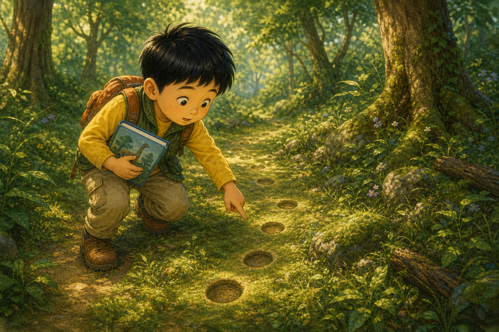
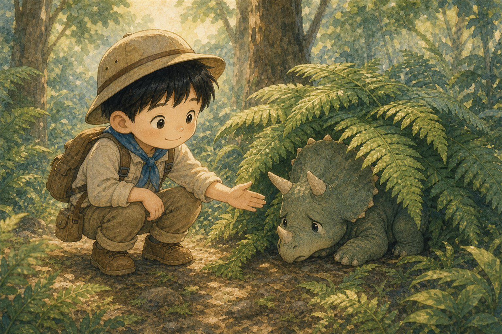
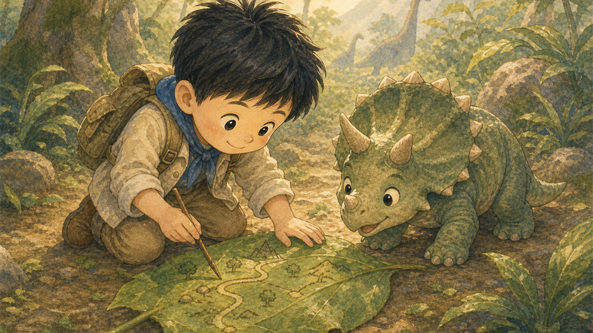
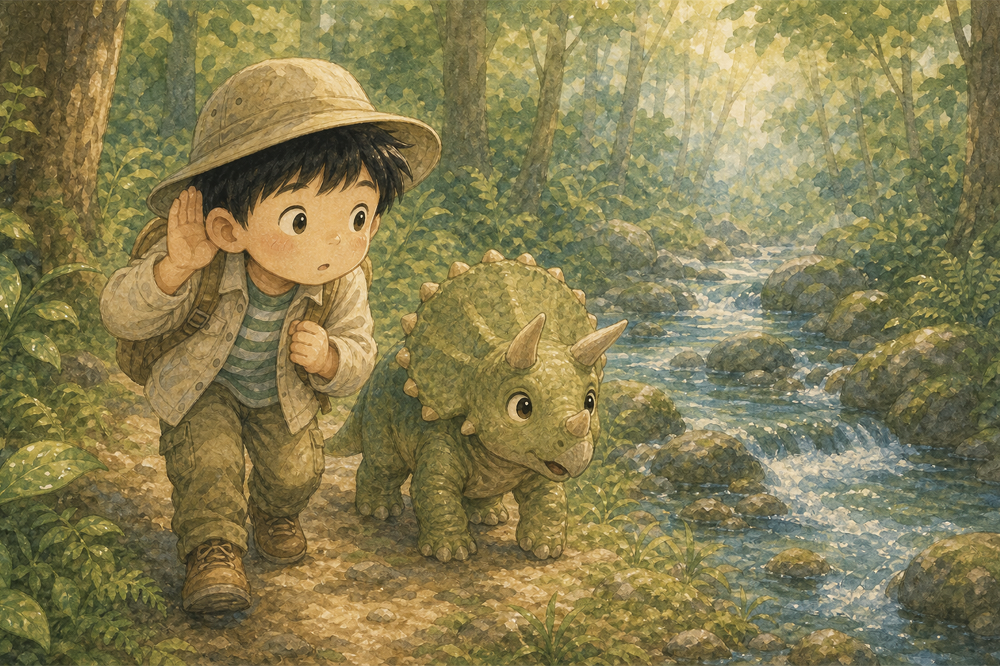
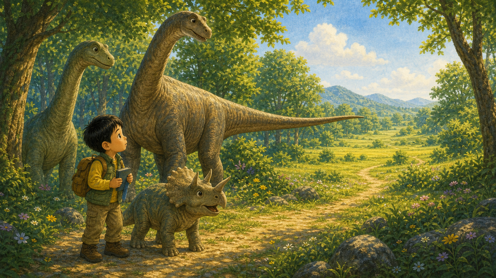
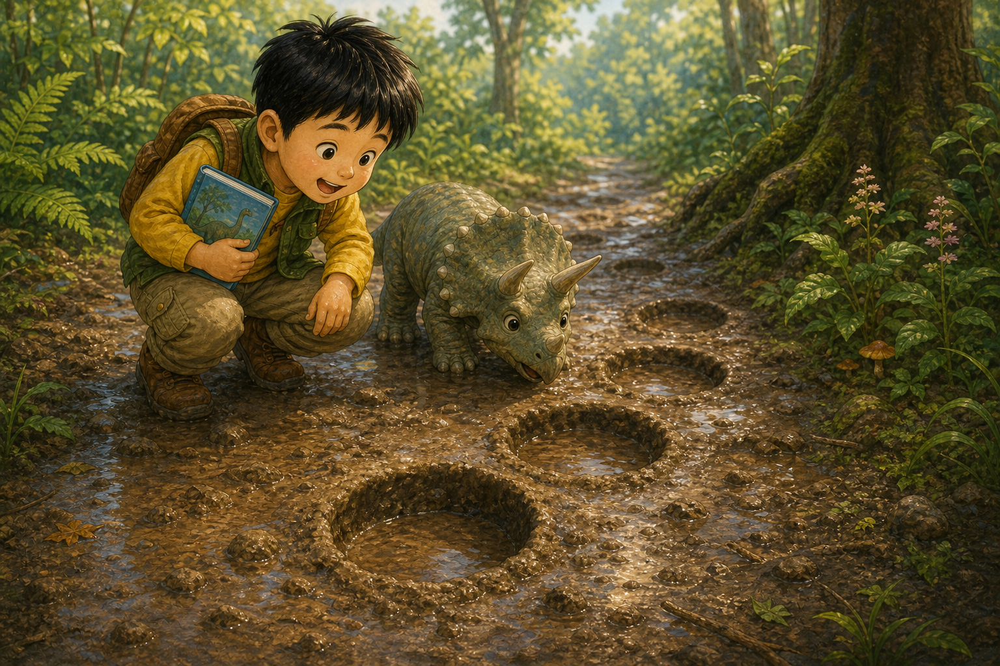
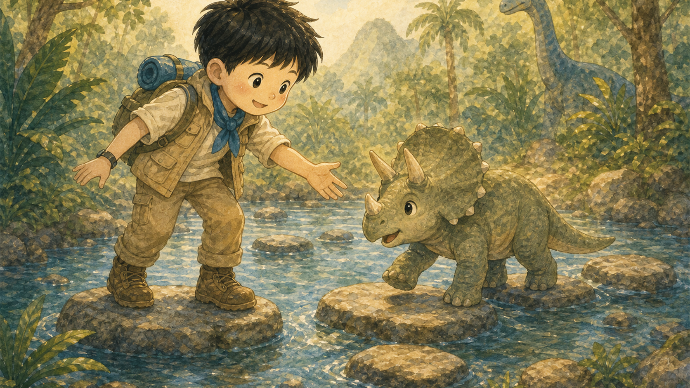
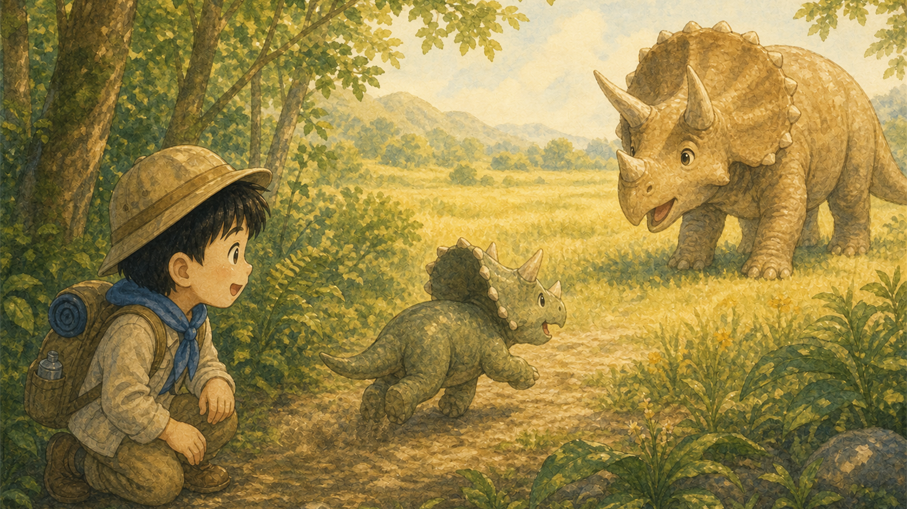
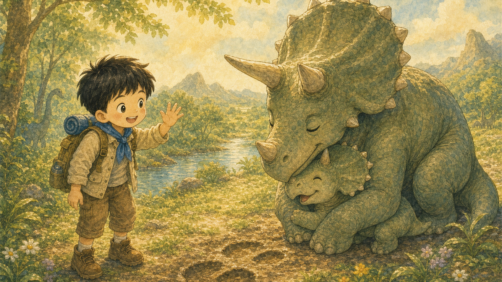
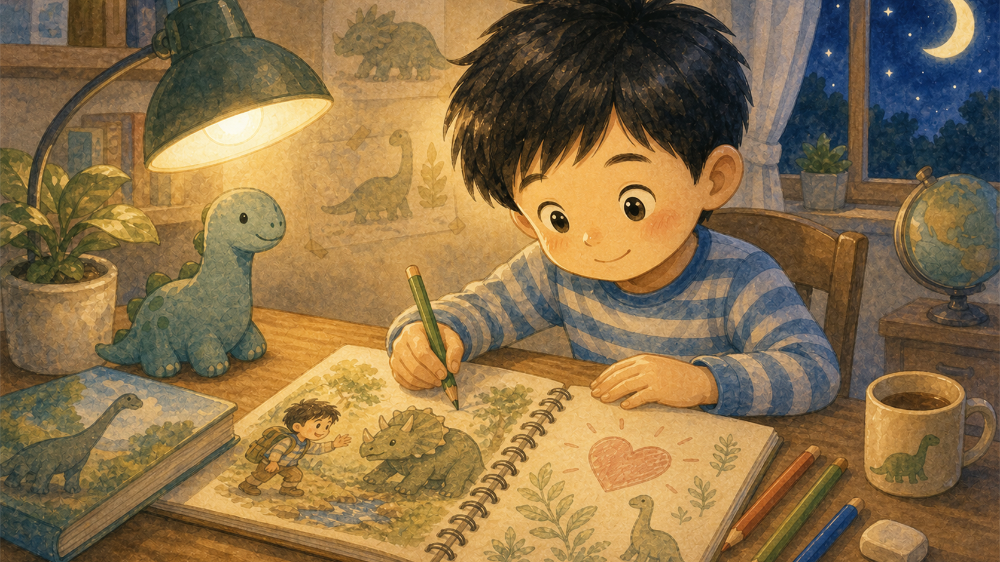

초록 숲의 발자국
준서는 공룡 도감을 품에 안고 숲길을 걸었어요. 풀잎 사이로 동그란 발자국이 콕콕 이어져 있었지요.
"진짜 공룡 친구가 지나간 걸까?"

준서는 공룡 도감을 품에 안고 숲길을 걸었어요. 풀잎 사이로 동그란 발자국이 콕콕 이어져 있었지요.
"진짜 공룡 친구가 지나간 걸까?"

커다란 고사리 뒤에서 아기 트리케라가 훌쩍이고 있었어요. 엄마를 찾다가 혼자 길을 잃은 거였어요.
준서는 작게 말했어요. "괜찮아. 내가 도와줄게."

준서는 넓은 나뭇잎에 숲길을 그렸어요. 아기 공룡은 눈물을 닦고 지도 옆에 코를 가까이 댔지요.
작은 탐험대의 첫 준비가 끝났어요.

둘은 졸졸 흐르는 냇가를 따라 걸었어요. 엄마 공룡의 발소리가 들리는지 귀를 기울였답니다.
숲은 무섭지 않고, 단서를 가득 숨긴 친구 같았어요.

햇살 가득한 빈터에서 긴목 공룡들이 잎을 먹고 있었어요. 준서는 조심히 다가가 길을 물었지요.
긴목 공룡은 꼬리로 남쪽 들판을 가리켰어요.

진흙길에는 깊고 둥근 발자국이 남아 있었어요. 아기 트리케라는 냄새를 맡고 눈을 반짝였어요.
"엄마 발자국이야!" 준서도 함께 기뻐했어요.

얕은 냇물이 길을 막았지만 둘은 서두르지 않았어요. 준서는 먼저 건너고, 아기 공룡은 준서를 따라왔지요.
서로 기다려 주니 어려운 길도 쉬워졌어요.

숲이 끝나는 곳에 커다란 트리케라가 서 있었어요. 아기 공룡은 반가운 소리를 내며 앞으로 달려갔지요.
준서의 마음도 같이 뛰기 시작했어요.

아기 공룡은 엄마 품으로 쏙 들어갔어요. 엄마 공룡은 준서에게 고맙다는 듯 고개를 낮게 숙였지요.
준서는 손을 흔들며 활짝 웃었어요.

집으로 돌아온 준서는 공룡 공책에 오늘의 모험을 그렸어요. 가장 크게 그린 것은 공룡보다 친구를 도운 마음이었답니다.
다음 탐험에서도 준서는 먼저 친구의 마음을 살피기로 했어요.